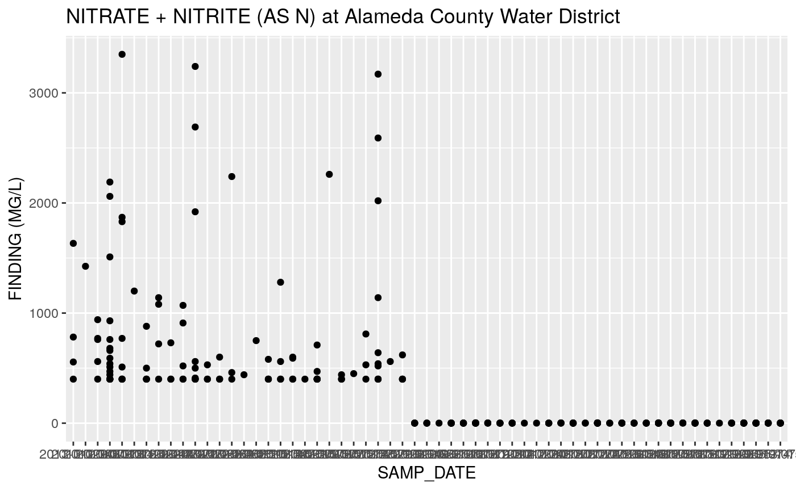

getting-started.RmdMake sure the package is installed. See installation instructions here.
Use the PSID (public water system ID number) of a system to get all the water quality data for that system. For example, Alameda County Water District is PSID 110001:
# returns all analyte data for PSID 110001 d <- get_data(psid = "110001") head(d) #> PWSID SAMP_DATE SAMP_TIME LAB_NUM ANADATE INDATE METHOD INBY #> 1: 110001 2013-07-15 1002 5401 2013-07-22 2013-09-05 <NA> U #> 2: 110001 2013-07-15 1002 5401 2013-07-22 2013-09-05 <NA> U #> 3: 110001 2013-07-15 1002 5401 2013-07-22 2013-09-05 <NA> U #> 4: 110001 2013-07-15 1002 5401 2013-07-22 2013-09-05 <NA> U #> 5: 110001 2013-07-15 1002 5401 2013-07-22 2013-09-05 <NA> U #> 6: 110001 2013-07-15 1002 5401 2013-07-22 2013-09-05 <NA> U #> SPECIAL STORE_NUM XMOD FINDING CHEMICAL #> 1: S 00081 < 5.0 COLOR #> 2: S 00086 < 1.0 ODOR THRESHOLD @ 60 C #> 3: S 00095 <NA> 863.0 SPECIFIC CONDUCTANCE #> 4: S 00400 <NA> 7.3 PH, FIELD #> 5: S 00410 <NA> 246.0 ALKALINITY (TOTAL) AS CACO3 #> 6: S 00440 <NA> 246.0 BICARBONATE ALKALINITY #> AKA1 AKA2 CLS RPT_CDE RPT_UNIT MCL NL #> 1: COLOR, APPARENT (UNFILTERED) <NA> T GP UNITS 15 0 #> 2: <NA> <NA> T GP TON 3 0 #> 3: E.C. <NA> T GP US 1600 0 #> 4: <NA> <NA> T XX <NA> 0 0 #> 5: <NA> <NA> T XX MG/L 0 0 #> 6: HCO3 BICARBONATE T GP MG/L 0 0 #> TRIGGER_AM DLR PHG RPHL CHEM_SORT #> 1: 15 0 0 0 COLOR #> 2: 3 1 0 0 ODOR THRESHOLD @ 60 C #> 3: 900 0 0 0 SPECIFIC CONDUCTANCE #> 4: 0 0 0 0 PH, FIELD #> 5: 0 0 0 0 ALKALINITY (TOTAL) AS CACO3 #> 6: 0 0 0 0 BICARBONATE ALKALINITY #> Water System Name Principal County Served #> 1: ALAMEDA COUNTY WATER DISTRICT ALAMEDA #> 2: ALAMEDA COUNTY WATER DISTRICT ALAMEDA #> 3: ALAMEDA COUNTY WATER DISTRICT ALAMEDA #> 4: ALAMEDA COUNTY WATER DISTRICT ALAMEDA #> 5: ALAMEDA COUNTY WATER DISTRICT ALAMEDA #> 6: ALAMEDA COUNTY WATER DISTRICT ALAMEDA #> Federal Water System Type -CODE Federal Water System Type #> 1: C Community #> 2: C Community #> 3: C Community #> 4: C Community #> 5: C Community #> 6: C Community #> State Water System Type -CODE State Water System Type #> 1: C Community #> 2: C Community #> 3: C Community #> 4: C Community #> 5: C Community #> 6: C Community #> Water System Status -CODE Water System Status Owner Type -CODE Owner Type #> 1: A ACTIVE L Local #> 2: A ACTIVE L Local #> 3: A ACTIVE L Local #> 4: A ACTIVE L Local #> 5: A ACTIVE L Local #> 6: A ACTIVE L Local #> Primary Water Source Type -CODE Primary Water Source Type #> 1: SW Surface Water #> 2: SW Surface Water #> 3: SW Surface Water #> 4: SW Surface Water #> 5: SW Surface Water #> 6: SW Surface Water #> Residential Population Non Transient Population Transient Population #> 1: 340000 NA NA #> 2: 340000 NA NA #> 3: 340000 NA NA #> 4: 340000 NA NA #> 5: 340000 NA NA #> 6: 340000 NA NA #> Total Population Number of Service Connections Agricultural #> 1: 340000 NA #> 2: 340000 NA #> 3: 340000 NA #> 4: 340000 NA #> 5: 340000 NA #> 6: 340000 NA #> Number of COMBINED Service Connections (CB) #> 1: 80871 #> 2: 80871 #> 3: 80871 #> 4: 80871 #> 5: 80871 #> 6: 80871 #> Number of Commercial (CM) Service Connections #> 1: NA #> 2: NA #> 3: NA #> 4: NA #> 5: NA #> 6: NA #> Numer of Institutional Service Conections #> 1: NA #> 2: NA #> 3: NA #> 4: NA #> 5: NA #> 6: NA #> Number of Residential Service Connections #> 1: NA #> 2: NA #> 3: NA #> 4: NA #> 5: NA #> 6: NA #> Total Number of Service Connections Fee Code Fee Code Description #> 1: 80871 C1 Large Water System #> 2: 80871 C1 Large Water System #> 3: 80871 C1 Large Water System #> 4: 80871 C1 Large Water System #> 5: 80871 C1 Large Water System #> 6: 80871 C1 Large Water System #> Date of Sanitary Survey visit (SNSV Visit Date) CITY #> 1: 11/30/2017 FREMONT #> 2: 11/30/2017 FREMONT #> 3: 11/30/2017 FREMONT #> 4: 11/30/2017 FREMONT #> 5: 11/30/2017 FREMONT #> 6: 11/30/2017 FREMONT #> Treatment Plant Class-CODE Treatment Plant Class #> 1: T5 Treatment Operator Level 5 #> 2: T5 Treatment Operator Level 5 #> 3: T5 Treatment Operator Level 5 #> 4: T5 Treatment Operator Level 5 #> 5: T5 Treatment Operator Level 5 #> 6: T5 Treatment Operator Level 5 #> Distribution System Class-CODE Distribution System Class #> 1: D5 Distribution Operator Level 5 #> 2: D5 Distribution Operator Level 5 #> 3: D5 Distribution Operator Level 5 #> 4: D5 Distribution Operator Level 5 #> 5: D5 Distribution Operator Level 5 #> 6: D5 Distribution Operator Level 5
You can query for a specific analyte by providing the storet ID.
# for PSID 110001, return all nitrate data (storet ID = A-029) d <- get_data(psid = "110001", storet = "A-029")
We can plot these results with ggplot as follows:
library(ggplot2) ggplot(d, aes(SAMP_DATE, FINDING)) + geom_point() + geom_smooth() + labs(title = "NITRATE + NITRITE (AS N) at Alameda County Water District", y = "FINDING (MG/L)") #> `geom_smooth()` using method = 'loess' and formula 'y ~ x'

Constrain the date range of the samples returned by supplying start_date and/or end_date argument(s) in YYYY-MM-DD format.
# returns all data for PSID 110001 between October 1, 2013 & August 30, 2018 d <- get_data(psid = "110001", start_date = "2013-10-01", end_date = "2018-09-30")
At the very least you must supply the PSID of a water system to get_data(). However, you may not know the PSID of a system of interest, or the:
To determine the PSID to query, as well as the storet IDs and date ranges of the analytes of interest, you can query metadata with the three helper functions:
Supply a county to get_water_system() to return PSIDs and water system names within that county:
# returns psid and water system name for a given county get_water_system(county = "Alameda") #> [1] NA NA NA NA NA NA NA NA NA NA NA NA NA NA NA NA NA NA NA NA NA NA NA NA NA #> [26] NA NA NA NA NA NA NA NA NA NA NA NA NA NA NA NA NA NA NA NA NA NA NA NA NA #> [51] NA NA NA NA NA NA NA NA NA NA NA NA NA NA NA NA NA NA NA NA NA NA NA NA NA #> [76] NA NA NA NA NA NA NA NA NA NA NA NA NA NA NA NA NA NA NA NA NA NA NA NA NA #> [101] NA NA NA NA NA NA NA NA NA NA NA NA NA NA NA NA NA NA NA NA NA NA NA NA NA #> [126] NA NA NA NA NA NA NA NA NA NA NA NA NA NA NA NA NA NA NA NA NA NA NA NA NA #> [151] NA NA NA NA NA NA NA NA NA NA NA NA NA NA NA NA NA NA NA NA NA NA NA NA NA #> [176] NA NA NA NA NA NA NA NA NA NA NA NA NA NA NA NA NA NA NA NA NA NA NA NA NA #> [201] NA NA NA NA NA NA NA NA NA NA NA NA NA NA NA NA NA NA NA NA NA NA NA NA NA #> [226] NA NA NA NA NA NA NA NA NA NA NA NA NA NA NA NA NA NA NA NA NA NA NA NA NA #> [251] NA NA NA NA NA NA NA NA NA NA NA NA NA NA NA NA NA NA NA NA NA NA NA NA NA #> [276] NA NA NA NA NA NA NA NA NA NA NA NA NA NA NA NA NA NA NA NA NA NA NA NA NA #> [301] NA NA NA NA NA NA NA NA NA NA NA NA NA NA NA NA NA NA NA NA NA NA NA NA NA #> [326] NA NA NA NA NA NA NA NA NA NA NA NA NA NA NA NA NA NA NA NA NA NA NA NA NA #> [351] NA NA NA NA NA NA NA NA NA NA NA NA NA NA NA NA NA NA NA NA NA NA NA NA NA #> [376] NA NA NA NA NA NA NA NA NA NA NA NA NA NA NA NA NA NA NA NA NA NA NA NA NA #> [401] NA NA NA NA NA NA NA NA NA NA NA NA NA NA NA NA NA NA NA NA NA NA NA NA NA #> [426] NA NA NA NA NA NA NA NA NA NA NA NA NA NA NA NA NA NA NA NA NA NA NA NA NA #> [451] NA NA NA NA NA NA NA NA NA NA NA NA NA NA NA NA NA NA NA NA NA NA NA NA NA #> [476] NA NA NA NA NA NA NA NA NA NA NA NA NA NA NA NA NA NA NA NA NA NA NA NA NA #> [501] NA NA NA NA NA NA NA NA NA NA NA NA NA NA NA NA NA NA NA NA NA NA NA NA NA #> [526] NA NA NA NA NA NA NA NA NA NA NA NA NA NA NA NA NA NA NA NA NA NA NA NA NA #> [551] NA NA NA NA NA NA NA NA NA NA NA NA NA NA NA NA NA NA NA NA NA NA NA NA NA #> [576] NA NA NA NA NA NA NA NA NA NA NA NA NA NA NA NA NA NA NA NA NA NA NA NA NA #> [601] NA NA NA NA NA NA NA NA NA NA NA NA NA NA NA NA NA NA NA NA NA NA NA NA NA #> [626] NA NA NA NA NA NA NA NA NA NA NA NA NA NA NA NA NA NA NA NA NA NA NA NA NA #> [651] NA NA NA NA NA NA NA NA NA NA NA NA NA NA NA NA NA NA NA NA NA NA NA NA NA #> [676] NA NA NA NA NA NA NA NA NA NA NA NA NA NA NA NA NA NA NA NA NA NA NA NA NA #> [701] NA NA NA NA NA NA NA NA NA NA NA NA NA NA NA NA NA NA NA NA NA NA NA NA NA #> [726] NA NA NA NA NA NA NA NA NA NA NA NA NA NA NA NA NA NA NA NA NA NA NA NA NA #> [751] NA NA NA NA NA NA NA NA NA NA NA NA NA NA NA NA NA NA NA NA NA NA NA NA NA #> [776] NA NA NA NA NA NA NA NA NA NA NA NA NA NA NA NA NA NA NA NA NA NA NA NA NA #> [801] NA NA NA NA NA NA NA NA NA NA NA NA
Supply a PSID to get_analyte_summary() to view a summary of its analyte data.
# returns summary of analytes available for a water system get_analyte_summary(psid = "110001") #> # A tibble: 200 x 6 #> psid storet analyte start_date end_date n #> <int> <chr> <chr> <date> <date> <int> #> 1 110001 00010 SOURCE TEMPERATURE C 2013-05-21 2019-02-21 5 #> 2 110001 00081 COLOR 2013-01-29 2019-07-16 265 #> 3 110001 00086 ODOR THRESHOLD @ 60 C 2013-01-29 2019-07-16 263 #> 4 110001 00095 SPECIFIC CONDUCTANCE 2013-01-29 2019-07-16 270 #> 5 110001 00400 PH, FIELD 2013-01-29 2019-07-16 268 #> 6 110001 00403 PH, LABORATORY 2014-09-15 2019-02-21 6 #> 7 110001 00410 ALKALINITY (TOTAL) AS CACO3 2013-01-29 2019-07-16 274 #> 8 110001 00440 BICARBONATE ALKALINITY 2013-01-29 2019-07-16 274 #> 9 110001 00445 CARBONATE ALKALINITY 2013-01-29 2019-07-16 274 #> 10 110001 00618 NITRATE (AS N) 2015-10-20 2019-07-16 155 #> # … with 190 more rows
Supply the common name of an analyte to search for storet IDs.
# returns storet ids for input chemicals get_storet_id("nitrate") #> storet analyte #> 1: 00618 NITRATE (AS N) #> 2: 71850 NITRATE (AS NO3) #> 3: A-029 NITRATE + NITRITE (AS N)
Full tables of metadata are also available:
# data.frame of psid, water system name, and county water_systems #> psid water_system_name county #> 1: 103039 <NA> <NA> #> 2: 103040 NORRIS CANYON PROPERTY OWNERS ASSN ALAMEDA #> 3: 103041 TRAILER HAVEN MOBILE HOME PARK ALAMEDA #> 4: 104010 <NA> <NA> #> 5: 105002 RIVERS END MARINA ALAMEDA #> --- #> 8226: 5810003 OLIVEHURST PUBLIC U.D. YUBA #> 8227: 5810004 CITY OF WHEATLAND YUBA #> 8228: 5810005 NEVADA ID - SMARTVILLE YUBA #> 8229: 5810006 NORTH YUBA WATER DISTRICT YUBA #> 8230: 5810700 BEALE AIR FORCE BASE YUBA
# data.frame of psid, storet, analyte, start date, end date, n samples psid_analyte #> # A tibble: 592,775 x 6 #> psid storet analyte start_date end_date n #> <int> <chr> <chr> <date> <date> <int> #> 1 103039 00081 COLOR 2017-11-22 2017-11-22 1 #> 2 103039 00086 ODOR THRESHOLD @ 60 C 2017-11-22 2017-11-22 1 #> 3 103039 00095 SPECIFIC CONDUCTANCE 2017-11-22 2017-11-22 1 #> 4 103039 00403 PH, LABORATORY 2017-11-22 2017-11-22 1 #> 5 103039 00618 NITRATE (AS N) 2017-11-22 2017-11-22 1 #> 6 103040 00618 NITRATE (AS N) 2016-07-12 2019-06-18 4 #> 7 103040 00620 NITRITE (AS N) 2017-07-11 2017-07-11 1 #> 8 103040 01032 CHROMIUM, HEXAVALENT 2015-07-15 2015-07-15 1 #> 9 103040 01501 GROSS ALPHA 2016-08-15 2016-08-15 1 #> 10 103040 01502 GROSS ALPHA COUNTING ERROR 2016-08-15 2016-08-15 1 #> # … with 592,765 more rows
# data.frame of storet and analyte analytes #> storet analyte #> 1: 00081 COLOR #> 2: 00086 ODOR THRESHOLD @ 60 C #> 3: 00095 SPECIFIC CONDUCTANCE #> 4: 00403 PH, LABORATORY #> 5: 00618 NITRATE (AS N) #> --- #> 442: 81892 CYCLOATE #> 443: 82184 AMETRYN #> 444: A-047 TERTIARY BUTYL FORMATE (TBF) #> 445: 38447 DICHLORAN #> 446: 77441 1-NAPHTHOL